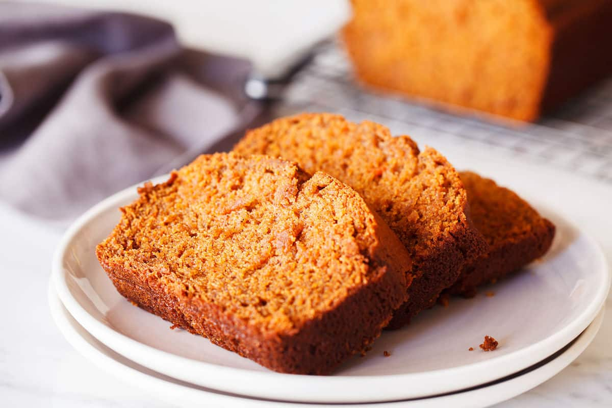

Gluten Free Sweet Potato Bread
Sweet potatoes, creamy almond butter, and oats combine to make an amazing spiced and sweet bread, and its completely gluten free!
Prep Time: 10 Minutes
Cook Time: 50 minutes
Calories: 231 calories per slice
Ingredients
- 1 cup rolled oats
- 1 tbsp ground cinnamon
- 1 tsp baking soda
- 1/2 tsp sea salt
- 1 1/2 cups mashed sweet potato
- 1/2 cup almond butter
- 1/4 cup honey
- 1 cup of egg substitute of your choice
- 2 tsp vanilla extract
- 1 tbsp ground cinnamon and 1 tbsp of coconut palm sugar to put on top of the bread.
- 1 tbsp unsalted butter and 1 tsp honey to add on top of bread as well.
Instructions
- Preheat oven to 350 degrees and prepare a loaf pan by lining it with parchment paper.
- Place oats in blender in a blender and blend until the oats resemble flour.
- Add the flour-textured oats to a large bowl and whisk it together with the cinnamon, baking soda, and salt.
- In a blender, add the sweet potato, almond butter, honey, egg substitute, and vanilla extract. Blend until you reach a thick consistency.
- Add together the dry blend and wet blend. Stir until everything appears evenly distributed.
- Pour the batter into a pan.
- Sprinkle coconut palm sugar over the top.
- Bake in the oven for 50 minutes, or until a toothpick inserted into the center comes out clean. Allow the bread to cool.
- Whisk together the butter and honey. Serve on top of bread slices.